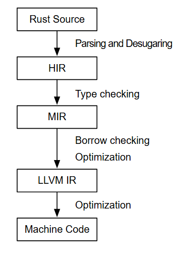

Rust反编译一直是比较困难的问题, Rust强调零成本抽象(没有繁重的运行时开销), 在使用高级特性（如泛型、闭包、迭代器等）时为了不引入额外的运行时开销, 编译器会生成高度优化且复杂的机器码, 从而难以直接恢复高层的抽象结构, 除此之外, Rust 的所有权系统及其借用检查器在编译过程中被彻底消解成运行时代码。这个过程生成了许多低级的内存管理代码, 这些代码在反编译时难以重新构建成高层次的所有权和生命周期语义。

Analysis
From MIR to Binaries
- lower the MIR to LLVM IR
- LLVM